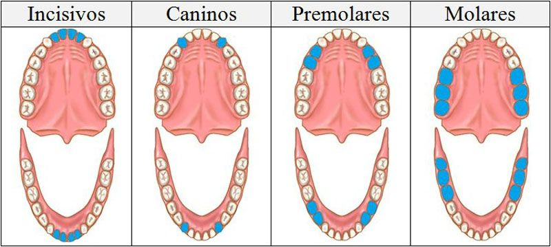

Dientes Permanentes

A partir de los 5 o 6 años, comienzan a aparecer los dientes permanentes, que deben drar toda la vida.
En esta etapa los niños/as ya se tienen que empezar a cepillar solos.
Para cuidar las nuevas muelas, es importante llegar con el cepillado hasta bien atrás.
Tanto las caries como la gingivitis (inflamacion de las encías) se previenen con el uso del cepillo dental.